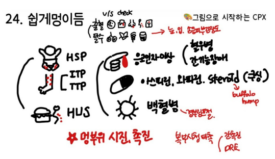
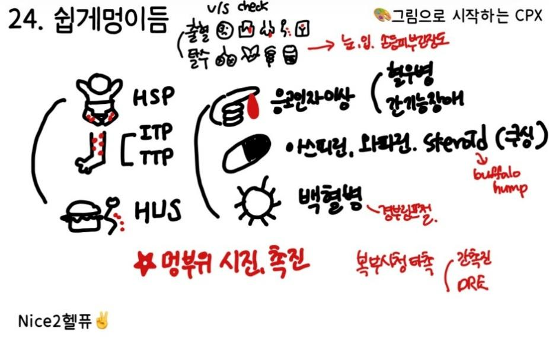

29. 쉽게 멍이 듦
± 삼출액 증가로 부종, 관절통, 심한 복부증상(산통,구토, 위장관 출혈) 신장증상(혈뇨,단백뇨)





원인 | ||||
혈관의 이상 | 혈관염(HSP), 쿠싱증후군 | |||
혈액응고장애 | 간질환, 혈우병 항응고제 복용 | |||
혈소판 이상 | ITP, DIC, AA, 백혈병, vWD, HUS, TTP, 약물 유발(항혈소판제, 진통소염제) | |||
평가목표 1) 혈소판이상, 혈관이상, 응고장애를 구별 2) 출혈 위험도를 확인하며 환자에게 자가관리 방법을 교육 | ||||
구체적인 성과 | ||||
병력 청취
| 멍의 특성 확인 | 점상출혈(2mm 미만) -> 혈소판/혈관 문제 의심 자반/반상출혈 -> 응고인자 결핍, 약물 부작용 발생 부위: 팔다리(외상 가능성), 몸통(병적인 자발적 출혈) 발생 시점: 다친 직후 바로 생김(혈소판), 다치고 한참 뒤에 생김(응고인자) | ||
| 멍의 유발요인 확인 | 외상 여부: 다친 적이 있는지, 자발적으로 생겼는지 약물력: 아스피린, 항응고제, NSAIDs, 스테로이드 | ||
| 혈액응고장애 증상 확인 | 1차 지혈 장애(혈소판/혈관): 코피, 양치할 때 피, 월경 과다 2차 지혈 장애(응고인자): 근육 내 혈종, 관절강 내 출혈 | ||
| 출혈 경향을 보이는 동반질환, 위험요인 확인 | 과거력(간질환), 사회력(음주), 가족력(혈우병, 폰 빌레브란트 병) 발열/체중감소/피로- 백혈병 등 악성종양 | ||
| 출혈 경향 정도 파악 | 지혈 시간, 위장관/비뇨기 출혈, 심한 두통(뇌출혈), 대량 출혈로 인한 쇼크 | ||
신체 진찰 | 멍 부위를 포한하여 피부진찰 | 멍의 종류 구분(점상출혈, 자반), 분포 확인(팔다리 or 몸통), 피부 위로 만져지는지(혈관염), 눌렀을 때 색이 변하면 단순 혈관 확장이나 홍반 | ||
| 출혈의 심한 정도 확인 | V/S 확인: 저혈압, 빈맥 결막 확인(빈혈), 코/입 진찰(활동성 출혈, 피 물집 확인) | ||
| 출혈과 관련된 장기 진찰 | 복부: 간비대(응고인자 생성 저하), 비장비대(백혈병/림프종 - 혈소판 생성 저하) 림프절 비대(혈액암), 관절 운동성 확인(혈우병) | ||
진단 및 치료 | 원인 질환 감별 | 급성 백혈병 | CBC, PBS, 혈액응고검사, 골수 검사 | 항암 화학요법, 조혈모세포 이식 |
|
| ITP | CBC, PBS, 혈액응고검사 | 스테로이드, IVIG, 필요 시 Plt 투여 |
|
| 간경화 | 간기능검사, 혈액응고검사, 복부 초음파 | FFP 투여, 비타민K, 간이식 |
|
| 혈우병 | CBC, PBS, 응고인자 검사 | 결핍된 응고인자 보충 |
|
| 파종혈관내응고 | 혈액검사(PT/aPTT, D-dimer, PLT) | 유발원인치료(패혈증), FFP |
|
| 약물 유발 | CBC, PBS, 혈액응고검사 | 약물 중단, 비타민K |
| 전문치료가 필요한 환자 감별 | V/S instability, 혈액암 의심, 심한 PLT 감소, 유전성 질환 | ||
환자교육 | 급성 조치 및 자기관리 방법 | 지혈 조치: 출혈 부위 압박 및 거상(RICE 원칙) 코피 발생 시 고개를 앞으로 숙이고 콧등 압박하기 외상 방지: 과격한 운동 자제, 부드러운 칫솔, 전기면도기 사용 약물 주의: Aspirin, NSAIDs 회피 및 한약/건강기능식품 섭취 주의 교육 시술 전 고지: 수술/발치 전 의료진에게 본인의 출혈 경향 알리기 | ||
| 응급 상황 | 주요 장기 출혈: 갑작스러운 심한 두통(뇌출혈), 혈변/흑색변(GI bleeding) 전신 증상: 대량 실혈로 인한 어지러움/호흡곤란/식은땀 | ||
질환 | 질환 설명 | 병력청취 | 신체진찰 | 검사 | 치료 | |
혈관 | 쿠싱 증후군 | 체내 스테로이드가 과다해져서, 피부와 혈관 주변 조직이 얇고 약해짐 | 자색선조, Moon face, Buffalo hump, 중심성 비만, 다모증, 무월경, 한약/스테로이드 복용력 | 복부 자색선조 중심성 비만
| 덱사메타손 투여 후 코티솔, 24hr 소변 코티솔, ACTH 농도 | 스테로이드 중단 TSA 뇌하수체절제술 |
| HSP 헤노흐쇤라인 자반병 | 감기나 장염을 앓고 난 후 면역에 이상이 생겨, 주로 다리와 엉덩이 쪽 미세 혈관에 염증이 발생 | 종아리 자색반 복통(colicky), 구토, 혈변,관절통(발목, 무릎), 혈뇨 소아 호발 | 종아리 자색반 | CBC, 소변검사 필요 시 피부 생검
| 경과 관찰, 스테로이드 |
응고 장애
| 간/간경화 1+1 | 응고 인자를 주로 만들어내는 간의 기능이 떨어져서, 출혈 시 지혈이 잘되지 않는 상태 | 황달, 복수, 만성간염 음주력 | 황달(눈, 피부) 복수 | LFT, 복부초음파 | 항바이러스제, 수혈 간이식 |
| Vit K 결핍 | 피를 굳게 만드는 데 필요한 영양소인 비타민 K가 몸에 부족해져서 피가 잘 멎지 않는 상태 | 출혈 경향, 피부 자반 Hx: 담췌질환, 장질환 와파린 복용, 영양결핍 | 피부 자반 | PT, aPTT | 비타민 K |
| 항응고제 | 피를 묽게 하는 약의 작용으로 인해 정상적인 지혈 과정이 억제된 상태 | 항응고제 복용 출혈 경향 | 피부 자반 구강 점막 출혈 | PT, aPTT | 와파린: 비타민 K 헤파린: protamine sulfate |
| 혈우병 0+1 | 선천적으로 특정 혈액 응고 단백질이 부족함 | 남아, 가족력, 어릴적부터 잦은 코피, 관절통, 부종 | 관절 부위 통증 종창 | PT, aPTT 응고인자검사 | 필요한 응고인자 투여 |
혈소판 이상
| ITP 5+1 | 우리 몸의 면역 세포가 정상적인 혈소판을 병균으로 오인하여 파괴함 | 성인 여성, 피부 점상 출혈, 자반, 잇몸/구강 출혈 이전 상기도 감염력 SLE HiV HSV H.pylori | 전신 멍든 곳 확인, 비장비대 없음. | CBC. PBS, PT, aPTT 골수검사 | 경과 관찰, (prn) 수혈 스테로이드, IVIG 비장절제술 |
| DIC | 심각한 전신 질환으로 혈액이 비정상적으로 응고되며 혈소판을 다 써버림 | 감염, 악성 종양 치료 전신염증력, 호흡곤란 두근거림 등 쇼크 Sx | 혈압 감소 빈맥 빈호흡 | CBC, PT, aPTT 피브리노겐 검사 | (출혈 경향) 비타민 K, FFP, 수혈 (응고 경향) 항응고제/항혈소판제 |
| 골수기능저하 (백혈병) | 피를 만들어내는 기관인 골수의 기능 자체에 문제가 생김 | 빈혈, 어지럼, 체중감소 피로, 식욕저하, 발열 | 목림프절 비대 빈혈 | CBC, PBS, 골수검사 염색체검사 | 항암치료, 방사선치료 동종조혈모세포 이식 골수 이식 |
| vWD | 혈소판이 잘 달라붙게 해주는 단백질 부족, 기능감소 | 점상 출혈 잇몸 출혈, 코피 과다월경, 가족력 | 멍, 점상출혈, 구망 점막 출혈 | CBC, PT, aPTT, vWF | Desmopressin, vWF |
| HUS 용혈요독증후군 | 주로 심한 식중독 후 독소가 혈관을 손상시켜, 혈소판이 감소하며 멍이 들고 신장 기능이 급격히 떨어지는 질환 | 고기->혈성설사->급성 신부전(핍뇨), 용혈성 빈혈, 혈소판 감소 | 빈혈, 황달, 출혈, 부종 | 소변검사 BUN/Cr PBS | 보존적 치료 혈액 투석, 수혈 |
| TTP 혈전 혈소판감소 자반병 | 몸속 미세 혈관에 수많은 혈전이 생기면서 혈소판을 소모해 버림 | 성인, 신경학적 증상 발열, 핍뇨, 용혈성 빈혈 점상 출혈, 잇몸 출혈 | 발열, 의식 저하, 감각 이상, 빈혈, 자색반 | CBC, PBS, PT, aPTT 골수검사 | Plasmapheresis 보존적 치료 |
외상 | 외상 |
| 외상 Hx, 출혈반 | X-ray 상 골절 | X-ray | 부목 고정, 드레싱 |
O | 언제, 당시 상황, 부딪히지 않았는지 + 부딪히고 어느정도 지나서 멍이 생기는지 | |||||||||||||||||||||||||||
L | 위치 (피부/관절), 멍이 생긴 순서 → 어디인지 보여주세요 | |||||||||||||||||||||||||||
D | 사라졌는지 지속되는지 | |||||||||||||||||||||||||||
Co | 멍이 크기가 커지거나 개수가 늘어나? | |||||||||||||||||||||||||||
Ex | 이전에도-> 치료? | |||||||||||||||||||||||||||
C | 양상) 색/크기/개수 (시간이 지나면서 색깔이 변함, 붉은색->푸른색/보라색->녹색->노란색/갈색) 아따뜨누간이상해 통증/따가움/열감/가려움/감각이상 (ITP는 무통성, 혈우병은 열감이 있고 아픔, HSP는 가렵고 붓고 따가움) 누르면 하얗게 - 멍이 아님! 염증이나 알레르기 | |||||||||||||||||||||||||||
F | 격한운동 -r/o ITP | |||||||||||||||||||||||||||
A | 응급/탈수) 두근거림/어지러움 출혈) 코피/양치할 때 피/관절부위 붓기 (r/o 2차)/위장관계 출혈(HMH) 전신) 발열/오한/체중감소/피로 ITP) 기침/가래/콧물/목아픔/최근 감기 -> 이전에도 감기 후 멍 잘 들었는지 TTP) 의식저하/두통/시야장애 HUS) 소변량감소/혈뇨 HSP) A/N/V/D/C/복통/관절통 (발목, 무릎) LC) 황달/복수/부종 쿠싱) 자색선조/중심성비만 (스테로이드?) | 응급/탈수) 두근거림/어지러움 출혈) 코피/양치할 때 피/관절부위 붓기, 통증 (r/o 2차) 전신) 발열/오한/체중감소/피로/관절통 호흡) 기침/가래/콧물/목아픔/최근 감기 -> 이전에도 감기 후 멍 잘 들었는지 소화) ANVDC/복통/혈변/흑색변/토혈/황달/복수 비뇨) 소변량감소/혈뇨 신경) 의식저하/두통/시야장애 r/o TTP 쿠싱) 자색선소/중심성비만 → 스테로이드 약 복용력, 과거력 확인? | ||||||||||||||||||||||||||
E | 건강검진 (간담췌 문제) r/o vit K, LC | |||||||||||||||||||||||||||
외 | 수술 (위절제술) r/o vit K | |||||||||||||||||||||||||||
과 | HTN/DM + 간/빈혈 | |||||||||||||||||||||||||||
약 | 피 묽게 하는 약 (아스피린, 와파린, 헤파린) 스테로이드, 한약 r/o 쿠싱 | |||||||||||||||||||||||||||
가 | 혈액응고질환 / 간질환 / 백혈병(혈액암) | |||||||||||||||||||||||||||
사 | 음주/흡연/운동/커피/식사/직업/스트레스 | |||||||||||||||||||||||||||
여 | 월경량 유산한 적 r/o DIC | |||||||||||||||||||||||||||
PEx | 동의 구하기, 손 씻기 v/s확인-눈-입-목-전신 (탈수/신장/멍/관절)-복부(시/간복수타진/간비촉진) | |||||||||||||||||||||||||||
| 기본 | V/S 확인 (혈압, 맥박, 호흡수, 체온) 1 눈: 빈혈, 황달 2 입: 탈수, 출혈, 인후두 염증 r/o ITP 3 목: 경부 림프절 r/o 암, 버팔로 r/o쿠싱 4 전신 : 피부긴장도+오목부종, 전신 탈의 A. 꼼꼼히 멍 다 확인/눌러보기 – 평평(혈소판) / 융기(혈관염) / 통증*부종(응고인자) B. “움직여보세요. 제가 움직여볼게요” 관절 운동성+눌러보기 (부종, 열감, 압통, 운동제한) | ||||||||||||||||||||||||||
| 복부
(DRE)
|
| ||||||||||||||||||||||||||
| 흉부
폐청진 + 활력징후 저하되면 심장청진 |
| ||||||||||||||||||||||||||
| DRE | DRE 언급 (소화기계 출혈 가능성) | ||||||||||||||||||||||||||
| 협조해주셔서 감사합니다. 불편한 건 없으셨나요? 손씻기 | |||||||||||||||||||||||||||
진단 계획 | 1 기본) 혈액검사: 전혈구검사/혈액응고검사/간수치 검사 2 TTP.HUS,DIC) 말초혈액도말검사 - 깨진 적혈구 MAHA 확인 3 쿠싱) 호르몬 검사, 원인에 따른 영상 검사 4 간) 간초음파/복부 CT 5 백혈병) 골수 생검 | |||||||||||||||||||||||||||
치료 | 1. ITP: 혈소판 수에 따라 수혈/혈소판 파괴를 막는 면역억제제 (스테로이드/면역글로불린) +) 그래도 안되면 다른 약물, 비장절제 2. TTP: 보존적+혈장교환해서 부족한 효소공급+불필요 단백질 제거 3. HUS: 보존/투석/수혈 4. HSP: 경과관찰(통증시 NSAID) → 심해지면 스테로이드 5. 쿠싱: 스테로이드 중단 | 1. 간: 항바이러스제(간염) / 금주(알코올성) / 식이요법(지방간) 2. 혈우병: 필요한 응고인자 3. DIC: 출혈(vitK,수혈), 응고(항응/항혈) 4. 백혈병: 조혈모/항암/방사선/골수이식 5. 본빌레브란드: 약물치료, vWF/8인자 보충 | ||||||||||||||||||||||||||
교육 | 생활습관 교정 (안심/회피,교정/응급) [안심] 정확한 원인을 파악해 관리하면 조절 가능하니 너무 걱정하지 않으셔도 됩니다 [응급] 갑작스런 심한 두통, 혈변, 어지럽거나 숨이 찰 경우, 출혈로 인한 응급상황일 수 있음 [회피/교정] (물리적 외상 방지) 외상 유발상황 피해, 세게 코풀기/양치질 부드럽게/격한운동 하지않기, 수술/발치시 의사 상의 (약물 복용 주의) 아스피린/진통소염제/헤파린/와파린 주의 (피를 더 묽게 해서 멍이 잘 들고 출혈이 심해질수도) | |||||||||||||||||||||||||||
PPI | 궁금하신 점 있으실까요? | |||||||||||||||||||||||||||
*TPO-RAsEltrombopag, Romiplostim, AvatrombopagPreferred over rituximab in many current guidelines. Effective for maintaining stable counts./Rituximab(Anti-CD20)Often used when patients prefer to avoid chronic medication (4 weekly infusions).
[도입] 갑자기 못 보던 멍이 생겨서 많이 놀라셨을 듯합니다. 설명드리기에 앞서, 혹시 지금 가장 걱정되는 게 있으신가요?
[진단] 지금 ○○○님께 가장 의심되는 진단명은 '면역 혈소판감소 자반병'입니다. 말이 조금 어렵지요? 우리 몸에서 혈소판이 지혈을 담당하는데, 면역계의 오작동으로 인해 이 혈소판이 줄어들면 피가 잘 안 멎고 멍이 잘 들게 되는 것입니다.
[감별] 하지만 다른 혈소판 질환(혈전성혈소판감소성자반병)이나, 간질환이 있어도 이렇게 멍이 드는 증상이 나타날 수 있습니다.
[진단] 따라서 정확한 진단을 위해, 우선 혈액검사로 멍드는 것과 연관된 혈구/응고인자/간수치를 확인하고 말초혈액도말검사로 깨진 적혈구 있는지 확인 겠습니다.
여기까지 이해되셨나요?
[치료] 면역 혈소판감소성 자발증으로 진단될 경우 치료 계획에 대해 말씀드리겠습니다. 이 병은 어린이에게 생길 경우 자연적으로 좋아지지만, 성인에게서는 보통 좋아졌다, 나빠졌다를 반복하는 병으로 알려져 있습니다. 그래도 보통은 크게 불편하지 않은 이상 따로 약을 쓰지 않고 경과를 지켜보는데요, 혈소판 수가 많이 감소했거나 증상이 심해지면 수혈/혈소판 파괴를 막는 면역억제제를 사용해볼 수 있습니다.
[교육] ○○○님은 몸에 피가 잘 나는 체질이므로, 피가 나는 상황을 최대한 회피해야 합니다. 과격한 운동이나 몸을 쓰는 일은 되도록 피하셔야 하고, 칫솔도 부드러운 것으로 바꾸시는 게 좋습니다. 피를 묽게하는 약물 위장관 출혈을 일으킬 수 있는 소염진통제도 주의해서 복용하셔라. 혹시 어지럽고 가슴이 두근거리는 증상이 있거나, 혈변이 있으면, 몸에서 피가 나고 있어서 치료가 필요한 상황일 수 있으니 곧바로 병원으로 오셔야 합니다. 또한 치과나 다른 병원에 갈 일이 있을 때, ○○○님이 피가 잘 나는 상태라는 것을 꼭 의사에게 말하셔야 합니다.
궁금한 점이 있으시다면 편하게 물어보십시오. 없으시다면, 이것으로 진료를 마치겠습니다. 수고 많으셨습니다.